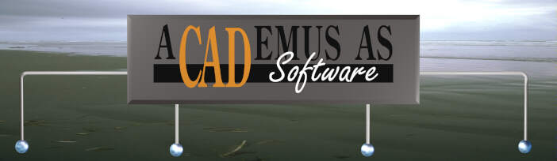

| Info om multimedia | Internett-tjenester | AutoCAD | Academus Software |
|---|
Sjekk våre referanser til andre relevante steder på nettet
Academus AS ble startet i 1989 av Jarle Djuvsland og Roy Nilsen. Forretningsideen er utvikling av programvare og salg av totale dataløsninger. Jarle Djuvsland er daglig leder, og har også ansvaret for salg og markeds- føring. Academus har AutoCAD som spesialfelt og våre medarbeidere har kompetanse innen programmering,kundestøtte, maskinvare, dokumenthåndtering og utførende 2D/3D tegning. | Som et av de få kompetansesentra i verden har Academus utviklet sin egen tolk av DWG-formatet. Denne tolken brukes i dag av mange program- leverandører verden over i tillegg til vår egen Academus View. Academus utfører også generell Windows programmering. Vår største kunde er Alcatelselskapene i Norge. Academus sysselsetter i dag 10 personer. |
|---|
Andre relevante steder på nettet
| Her finner du det meste om AutoCAD og 3D studio. Academus selger PCer og skrivere fra Hewlett Packard. |
|
Academus AS Munkedamsveien 59 0270 Oslo Tlf 22 83 82 81 Fax 22 83 59 90 academus@acedemus.no
Copyright © 1995 Academus AS |